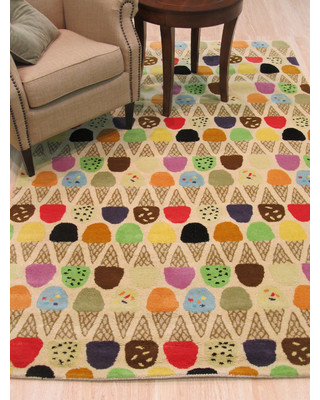
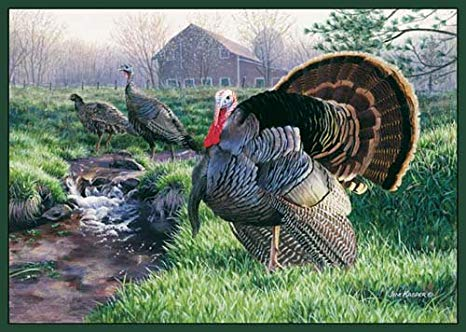
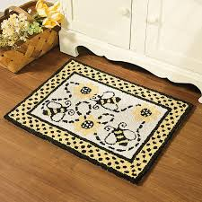
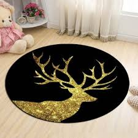
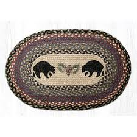

| Types of Carpets | Features |
|---|---|
| Nylon | This is the most durable and stain resistant carpet avalaible. A must have for homes with pets/children. Great for hallways and stairs. |
| Polyster | It has a lusurious look and feel with a wide range of colors to choose from. Great for normal amounts of traffic in a house. |
| Olefin | This has pretty good stain/moisure resistance but is worse in quality compared to nylon or polyster. |
| Wool | It is known for its natural beauty and has some of its own stain resistant qualities. However it is not originally stain resistant. Wool will look good for a long time. |
| Stain-Resistant | If you have lots of traffic plus kids/pets, a stain resistant carpet is the way to go. All you need to do is choose your type of carpet and color and there you go! |
Nylon:

Polyster:

Olefin:

Wool:

Stain-Resistant:

Peppers:

Lemons:

Potatoes:

Icecream:
Turkeys:
Bees:
Deer:
Bears:
